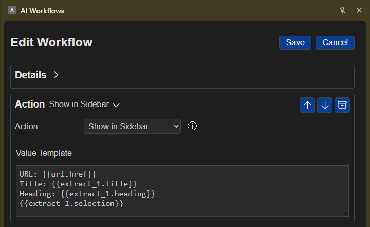

Page Action
Overview
Use Action to control a webpage, manage browser tabs, or display and save workflow results. Some actions work with the active webpage; others work with browser tabs or the extension sidebar.

Simple examples
- Fill a webpage's search box and press Enter.
- Wait for search results to appear, then save a summary in View Content.
- Show a workflow result in the sidebar.
Before you start
Actions that interact with webpage content need an active website tab. Chrome's built-in pages and blank tabs cannot be controlled this way. For Click Element, Update Field, Wait for Selector, or Key Press, click View Element and select the page item instead of typing its CSS selector yourself.
Choose an action
Select an action from the Action menu:
- Show in Sidebar displays text or workflow results in the sidebar's Result area.
- Append Content saves text in View Content, where you can review, copy, or download saved clippings.
- Navigate to URL opens a web address in the active tab. Only HTTP or HTTPS addresses are supported; a path can be relative to the current website.
- Switch to Tab activates a tab by its web address or title. If you provide a web address that is not already open, it opens in a new tab.
- Close Tab closes a tab that matches the address or title you enter.
- Refresh Tab reloads the active tab.
- Click Element clicks a selected page item, such as a button or link.
- Update Field enters text into one page field.
- Update Multiple Fields enters text into several fields at once. This option requires a structured list of fields and values.
- Wait/Delay pauses the workflow for the number of seconds you enter.
- Wait for Selector waits up to 10 seconds for a page element to appear.
- Key Press sends a supported key, such as Enter or Tab, to the active field or selected page item.
Auto is also listed in the menu, but it does not currently perform an action.
Configure the selected action
- Choose the action you want to perform.
- If the form shows CSS Selector, use View Element to select the page item. This is needed for actions such as clicking an item, updating a field, or waiting for an item to appear.
- If the form shows Value Template, enter the text, web address, delay, or key required by that action. You can include results from earlier workflow steps.
When you use Append Content, choose View Content to open the saved clippings.